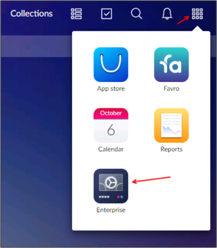

Log in to your Favro account as an Administrator.
Click App selection, then select Enterprise:

Click New configuration:
Enter the following (see screen shot at end of step for reference):
DOMAIN NAME: Enter your domain name.
SAML LOGIN URL: Copy and paste the following:
Sign into the Okta Admin Dashboard to generate this variable.
SAML LOGOUT URL: Copy and paste the following:
Sign into the Okta Admin Dashboard to generate this variable.
SAML IDENTITY PROVIDER CERTIFICATE: Copy and paste the following (in PEM text format):
Sign into the Okta Admin Dashboard to generate this variable.
Click Save settings.
Follow the DNS verification instructions provided.
Done!
Notes:
SP-initiated flows and Just In Time (JIT) provisioning are supported.
IDP-initiated flows are not supported.